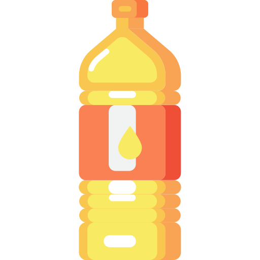
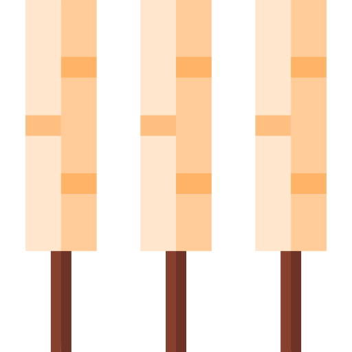

Inicio
Milho
Soja
Receitas
30 anos
Sobre mim
Pamonha Salgada
Tempo: 60min
Dificuldade: Medio
Quantidade: 5 porções
Ingredientes
5 espigas de milho
 100ml de óleo
 5 tiras de queijo coalho
1 colher de sopa de orégano
1 colher de sopa de sal
Modo de preparo
1
Retire todas as palhas da espiga e as guarde separadamente.
2
Retire os milhos da espiga com ajuda de uma faca.
3
Em um liquidificador bata o milho com óleo e sal, bata ficar um creme homogêneo.
4
Abra a palha limpa e ajeite em formato de concha.
5
Encha-o com a massa e adicione o orégano por cima.
6
Coloque uma tira de queijo dentro para o recheio.
7
Puxe as bordas para dentro, fechando o recheio dentro da palha.
8
Amarre com um barbante.
9
Ferva as pamonhas por cerca de 30 minutos.
10
Retire o barbante, abra a palha e está pronto!
Avalie esta receita
Avalie
Enviar
Obrigada por avaliar!